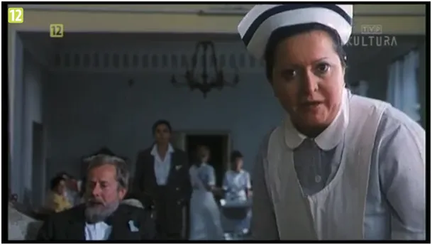
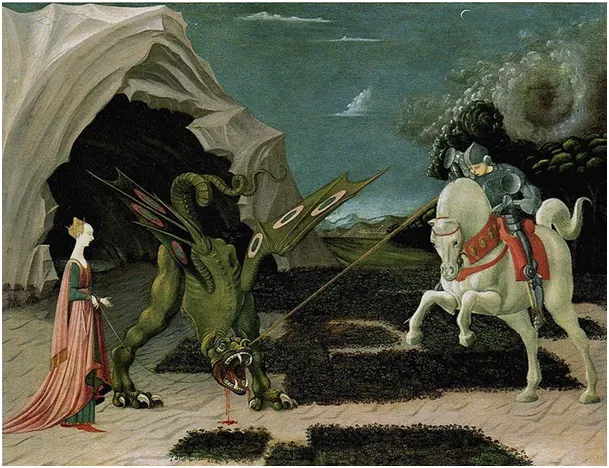

“Ucieczka z kina Wolność”
W 1990 roku, chwilę po "końcu komunizmu" pojawił się doskonały film "Ucieczka z kina Wolność" https://vod.tvp.pl/video/ucieczka-z-kina-wolnosc,ucieczka-z-kina-wolnosc,43821203.
Zarazem do bólu realistyczny i surrealistyczny obraz zdystansował "Purpurową różę z Kairu" Woody'ego Allena, która była wtedy wzorem tej konwencji, w której aktorzy sprzeciwiają się scenariuszowi modyfikowanemu przez urzędową cenzurę, nawiązują z ekranu kontakt z publicznością i odmawiają dalszego grania w trakcie projekcji z celuloidowej taśmy.

Przed 1990 rokiem żyliśmy wszyscy w kinie "Wolność Socjalistyczna", żyjąc równolegle w dwóch światach w kolorowym oficjalnym matrixie i siermiężnej rzeczywistości z kartkami na buty i mięso. Ten film był manifestem transformacji.
Pamiętam radosny dzień, gdy zniesiono urzędową cenzurę w 1990 roku, na murze warszawskiej Pragi, w pobliżu akademika na ul. Kickiego, gdzie zawsze były malowane antyrządowe hasła, o świcie pojawił się napis "JUŻ NIE WIEM, CO PISAĆ!". Taki to był duch w narodzie!
Wolność słowa jest ważna, ale ma swoją cenę, musimy być gotowi, że poglądy nam skrajnie odległe będą też głoszone. Mimo, że w czasie dominacji koncernów mediowych walka to nierówna, ja to kupuję. Wszechobecne media kształtują poglądy młodych ludzi bardziej niż rodzina i to jest problem. Natomiast, gdy te same media blokują inne poglądy, mamy DUŻY PROBLEM. Jak wiecie mam kolejnego, 30-dniowego bana na FB za publikację danych Ministerstwa Zdrowia o śmiertelności w kraju. Ten tekst piszę w dniu, gdy FB zbanował profil Konfederacji, partii parlamentarnej z milionowym poparciem.

Bestia ma swoje słabe strony, np. to, że ciągle jest głodna naszego czasu. Możemy zafundować jej jeśli nie post, to choćby zmniejszenie porcji. Zakochaliśmy się w mediach społecznościowych bez wzajemności, często to związek toksyczny. Czas na detoks. Co robić? Jest kilka prostych sposobów:
Jeśli już nie możemy zrezygnować z FB i podobnych całkiem to ograniczamy istotnie tam spędzony czas:
- Z danego medium korzystamy np. co drugi dzień. To będzie dla nich bardzo dotkliwe, każdy nawet malutki spadek ruchu to miliony dolarów mniej.
- Linkujemy na stronach FB i podobnych tylko media niezależne, to powoduje dalszy spadek ruchu, bo przekierowani czytelnicy swój czas spędzają już gdzie indziej, a liczy się każda minuta.
- Korzystamy z e-maila/SMSa i innych technik minimalizując korzystanie z popularnych komunikatorów.
- Ważne: Zawsze, gdy nie korzystamy z FB "WYLOGOWUJEMY SIĘ" z FB zanim, zamkniemy apkę.
- Rozsyłamy blokowane treści jak możemy, nawet na FB.
Niech nas nie zwiodą słowa premiera potępiające zamkniecie strony Konfederacji. Tylko dotkliwe kary finansowe lub ograniczenie działalności takiego podmiotu łamiącego polskie prawo od samej Konstytucji poprzez wiele innych ustaw jest tu jedynym możliwym działaniem. Sam jestem ofiarą tych przestępczych praktyk, dlatego Panie Premierze czas na działanie.
Organizujmy się! Pozew zbiorowy ? Inne formy ? Piszcie tu: kontakt@pawelklimczewski.pl
Zanim zaczniecie oglądać film, link na początku, wylogujcie się z FB, zauważą to ... ;)
Paweł Klimczewski